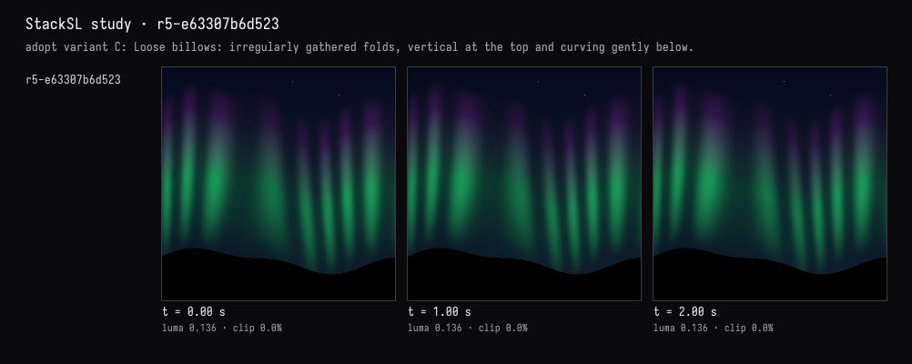
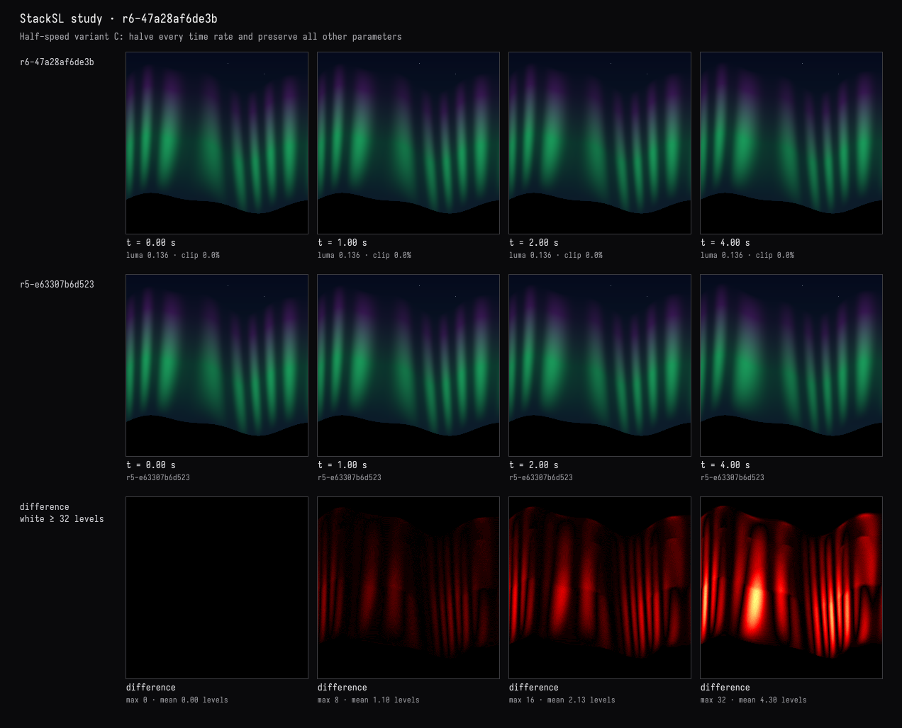

Half speed, measured
The recorded exchange: the request, the tool activity, every image the tools returned to the model, and its reply. Expand tool activity to read the steps; open an image to see it full size.
- Adopted variant C in the study card →
r5-e63307b6d523“adopt variant C: Loose billows: irregularly gathered folds, vertical at the top and curving gently below.”
I took C in the card. Now slow the whole ripple to about half speed, keeping everything else exactly as it is, and show me it really moves about half as much.
Tool activity · 3 steps
Starting AI conversation
InspectStackSLStudy finished (1 ms)
Waiting for model
I’ll halve all five time rates—edge motion, fold gathering, billowing, and brightness variation—without changing anything else. Then I’ll compare motion over the same interval and check that the slowed version at 4 seconds matches the original at 2 seconds.
Tool activity · 4 steps
ObserveStackSLStudy finished (408 ms)
SetStackSLNumbers finished (2225 ms)
Waiting for model
Completed


Done—C now runs at half speed. Only its five time rates changed; colours, folds, stars, sky fade, and black hills remain unchanged.
Measured frame-to-frame change over equal intervals:
| Interval | Before | Slowed | Ratio |
|---|---|---|---|
| 0–1 s | 1.2076 | 0.6065 | 50.2% |
| 1–2 s | 1.2107 | 0.6040 | 49.9% |
These measure average pixel-colour change, not physical displacement. Halving every time rate also means the new animation at 4 seconds reaches the original’s 2-second state, visible in the previews.
The starting frame is pixel-identical. Compilation and checks passed without warnings.